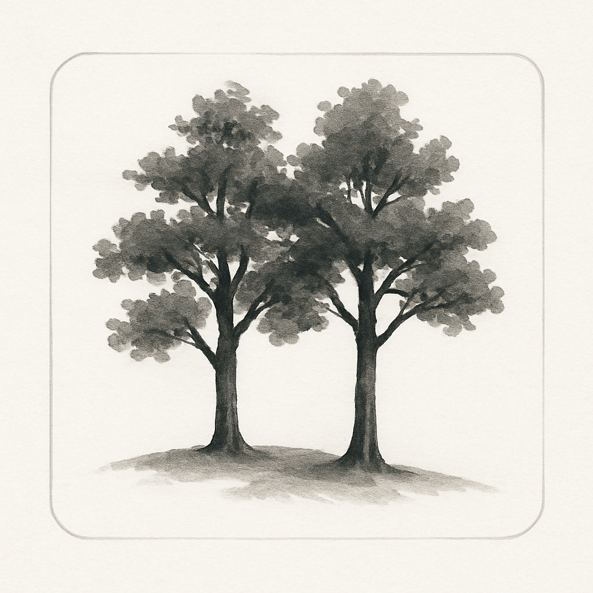
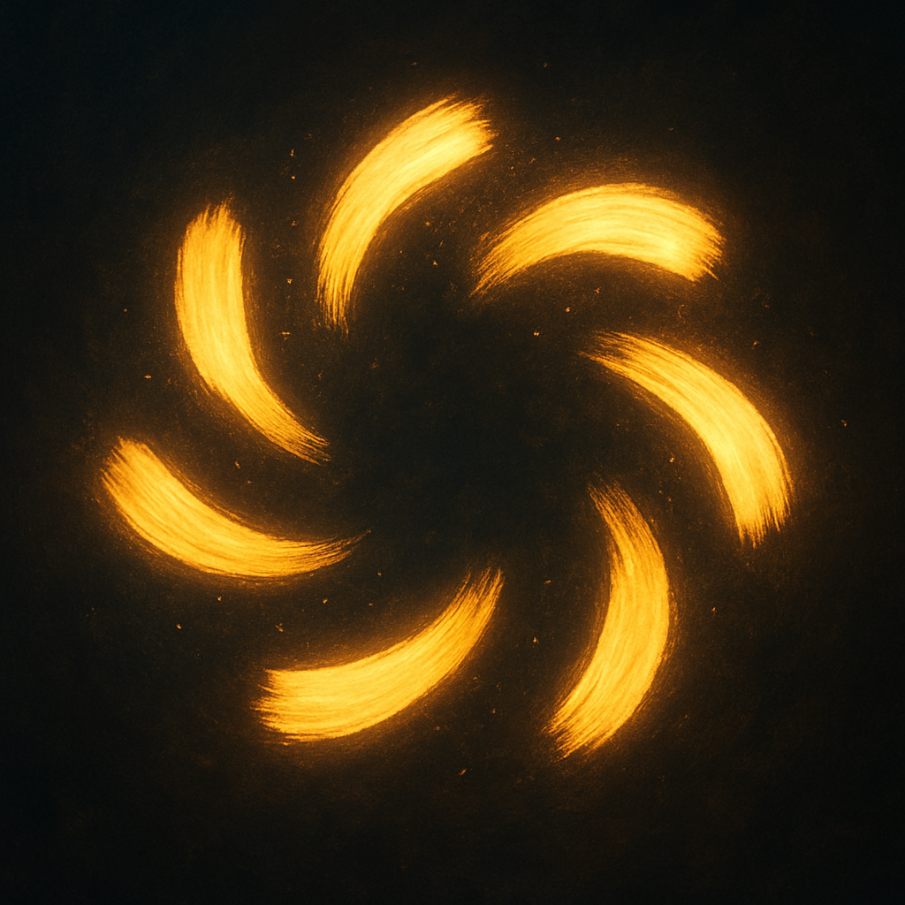
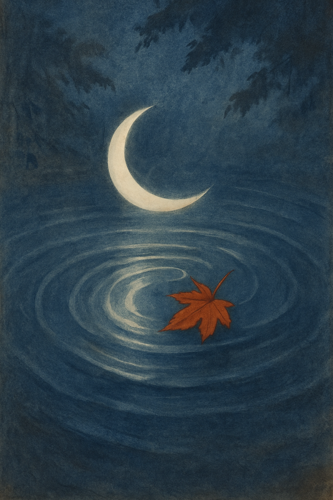
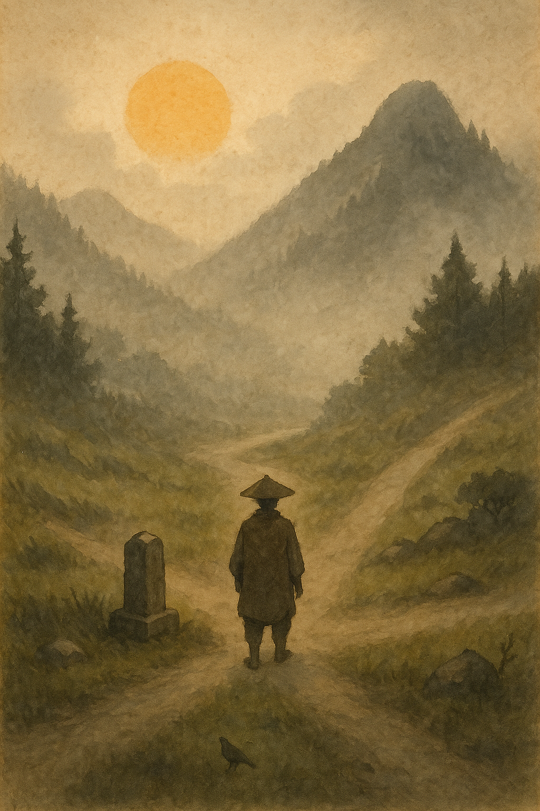
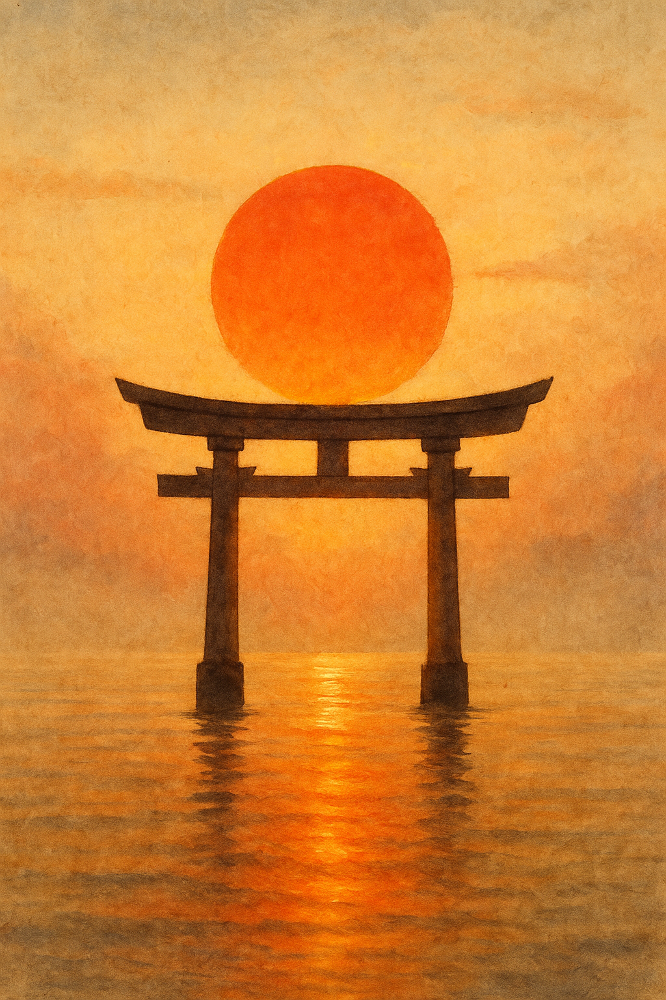

One horizontal line — everything begins with one stroke.
一
On: イチ・Kun: ひと(つ)
💡

↑ Back to Top

Two horizontal lines — double the foundation, double the balance.
一 + 一
On: ニ・Kun: ふた(つ)
💡

↑ Back to Top
Three lines — like steps toward something greater.
一 + 一 + 一
On: サン・Kun: みっ(つ)
💡

↑ Back to Top
Legs inside an enclosure — as if four is trying to run but can’t get out.
👄 + 🦵
On: シ・Kun: よん・よっ(つ)
💡

↑ Back to Top
Visualize a "T" running through a "2". For meaning, think of a monk with five senses.
T + 2
On: ゴ・Kun: いつ(つ)
💡

↑ Back to Top
A lid over legs — six is hiding or offering shelter.
🎩 + 🦵
On: ロク・Kun: むっ(つ)
💡

↑ Back to Top

A cut — like a sword slashing downward and bending up again.
🍀 (🔪)
On: シチ・Kun: なな(つ)
💡

↑ Back to Top
A parting of the ways — like two legs walking in different directions.
△
On: ハチ・Kun: やっ(つ)
💡

↑ Back to Top

A bent line with a hook — almost ten, but not quite.
⚾️ ／ 🪝
On: キュウ・Kun: ここの(つ)
💡

↑ Back to Top

A perfect cross — balance and completeness. All directions, all things.
一 + | → ✞
On: ジュウ・Kun: とお
💡

↑ Back to Top
A square mouth — open, ready to speak or eat.
👄
On: コウ・Kun: くち
💡

↑ Back to Top

A radiant square — the sun’s shape sealed in ancient lines.
🌞
On: ニチ・ジツ・Kun: ひ・か
💡

↑ Back to Top
A crescent form — waxing, waning, always watching.
🌙 (🍗）
On: ゲツ・ガツ・Kun: つき
💡

↑ Back to Top
A window to the world — eye-shaped lines gazing outward.
👁️🗨️
On: モク・Kun: め・ま
💡

↑ Back to Top
Four plots enclosed — a rice field seen from above.
圓
On: デン・Kun: た
💡

↑ Back to Top
 One
One

 Two
Two
 Three
Three

 Four
Four

 Five
Five

 Six
Six

 Eight
Eight

 Nine
Nine
 Ten
Ten
 Mouth
Mouth

 Sun
Sun
 Moon
Moon

 Eye
Eye

 Rice Field
Rice Field